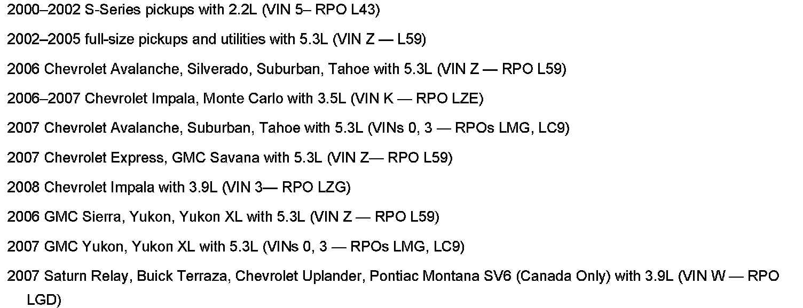

Fuel System - E85 Fuel Usage Precautions
Bulletin No.: 05-06-04-035CDate: July 30, 2007
INFORMATION
Subject:
Usage of E85 Fuels in GM Vehicles
Models:
1997-2008 GM Passenger Cars and Trucks (including Saturn)
2003-2008 HUMMER H2
2006-2008 HUMMER H3
1997-2008 Isuzu NPR Commercial Medium Duty Trucks
2005-2008 Saab 9-7X
Supercede:
This bulletin is being revised to add the 2008 model year and additional engines with E85 capability. Please discard Corporate Bulletin Number 05-06-04-035B (Section 06 - Engine/Propulsion System).
Customer Interest in E85 Fuel
As the retail price of gasoline increases, some locations in the country are seeing price differentials between regular gasoline and E85 where E85 is selling for substantially less than regular grade gasoline. One result of this is that some customers have inquired if they are able to use E85 fuel in non-E85 compatible vehicles.
Only vehicles designated for use with E85 should use E85 blended fuel.
E85 compatibility is designated for vehicles that are certified to run on up to 85% ethanol and 15% gasoline. All other gasoline engines are designed to run on fuel that contains no more than 10% ethanol.
Use of fuel containing greater than 10% ethanol in non-E85 designated vehicles can cause driveability issues, service engine soon indicators as well as increased fuel system corrosion.
Using E85 Fuels in Non-Compatible Vehicles
General Motors is aware of an increased number of cases where customers have fueled non-FlexFuel designated vehicles with E85. Fueling non-FlexFuel designated vehicles with E85, or with fuels where the concentration of ethanol exceeds the ASTM specification of 10%, will result in one or more of the following conditions:
Lean Driveability concerns such as hesitations, sags and/or possible stalling.
SES lights due to OBD codes.
Fuel Trim codes P0171 and/or P0174.
Misfire codes (P0300).
Various 02 sensor codes.
Disabled traction control or Stability System disabled messages.
Harsh/Firm transmission shifts.
Fuel system and/or engine mechanical component degradation.
Use of fuel containing greater than 10% ethanol in non-E85 designated vehicles can cause driveability issues, service engine soon indicators as well as increased fuel system corrosion.
If the dealer suspects that a non-FlexFuel designated vehicle brought in for service has been fueled with E85, the fuel in the vehicle's tank should be checked for alcohol content with tool J 44175. If the alcohol content exceeds 10% the fuel should be drained and the vehicle refilled with gasoline - preferably one of the Top Tier brands.
Repairs to non-FlexFuel vehicles that have been fueled with E85 are not covered under the terms of the New Vehicle Warranty.
A complete list of GM's FlexFuel vehicles can be found in this Service Bulletin, or at www.livegreengoyellow.com.
E85 Compatible Vehicles

The only E85 compatible vehicles produced by General Motors are shown.
Only vehicles that are listed in the E85 Compatible Vehicles section of this bulletin and/or www.livegreengoyellow.com are E85 compatible.
All other gasoline and diesel engines are NOT E85 compatible.
Use of fuel containing greater than 10% ethanol in non-E85 designated vehicles can cause driveability issues, service engine soon indicators as well as increased fuel system corrosion.
Repairs to non-FlexFuel vehicles that have been fueled with E85 are not covered under the terms of the New Vehicle Warranty.

Disclaimer